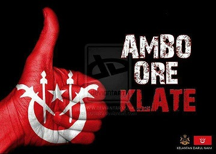
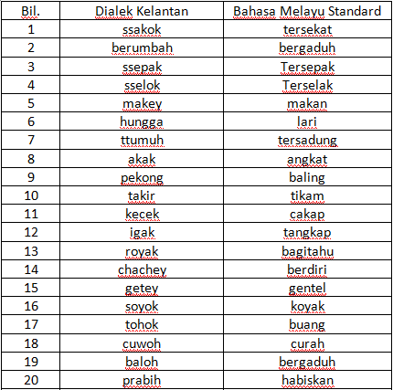
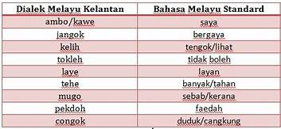
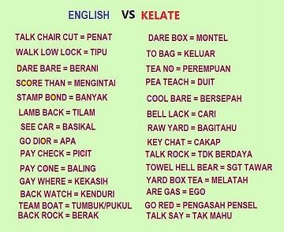

Kelantan dialect of Malay is spoken used by people in Kelantan.
It is not only use by the Kelantan Malays but also by Chinese Village, Indian and Siamese Birth Kelantan.
The Kelantan accent is also spoken in Besut and Pulau Perhentian Terengganu as well as spoken in various deities in Kedah such as Baling, Sik and Padang Terap.
There are no historical records that show it off but it certainly bursting-CIR to the Malay spoken since that began over 1,000 years ago.
This is why there are similar pronouns and meanings for the Malays not only outside Kelantan but also outside Malaysia.


English VS Kelantanese
